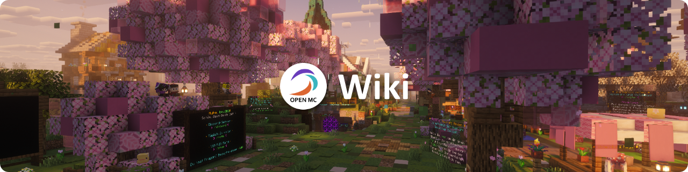

Home

Herzlich Willkommen im OpenMC Wiki 👋
Server-IP: openmc.net | Version: 1.21.11

Navigation
In unserem Wiki findest du umfangreiche Informationen zu den Funkionen des Servers.
Nutze gerne das Menü auf der linken Seite oder die Suchfunktion.
Du kannst Wiki-Artikel auch direkt vom Server aus mit /wiki <Thema> öffnen.
Support
Du bist im Wiki nicht fündig geworden und benötigst weiteren Support?
Erstelle jederzeit ein Support-Ticket im Discord oder stelle deine Frage im Chat. Wir helfen dir gerne weiter 😊